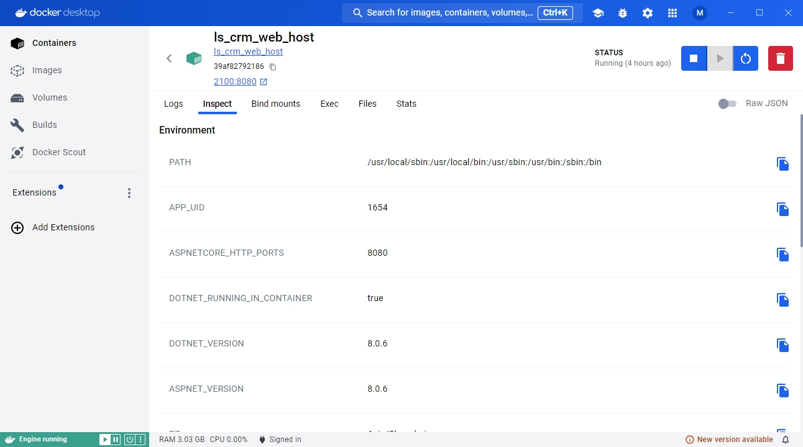
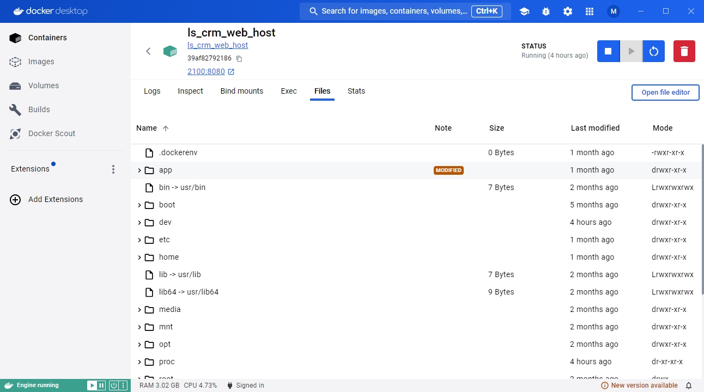
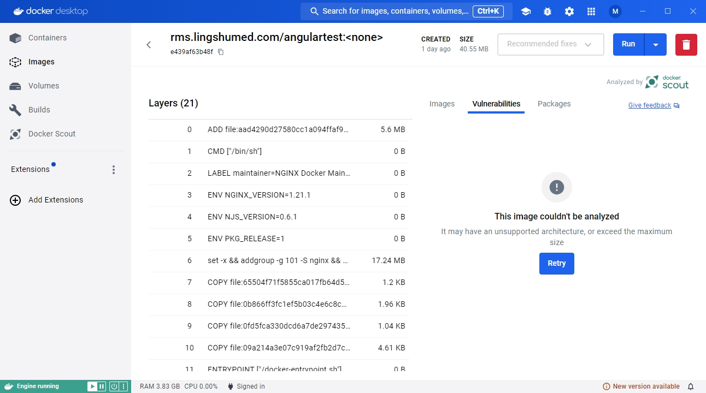
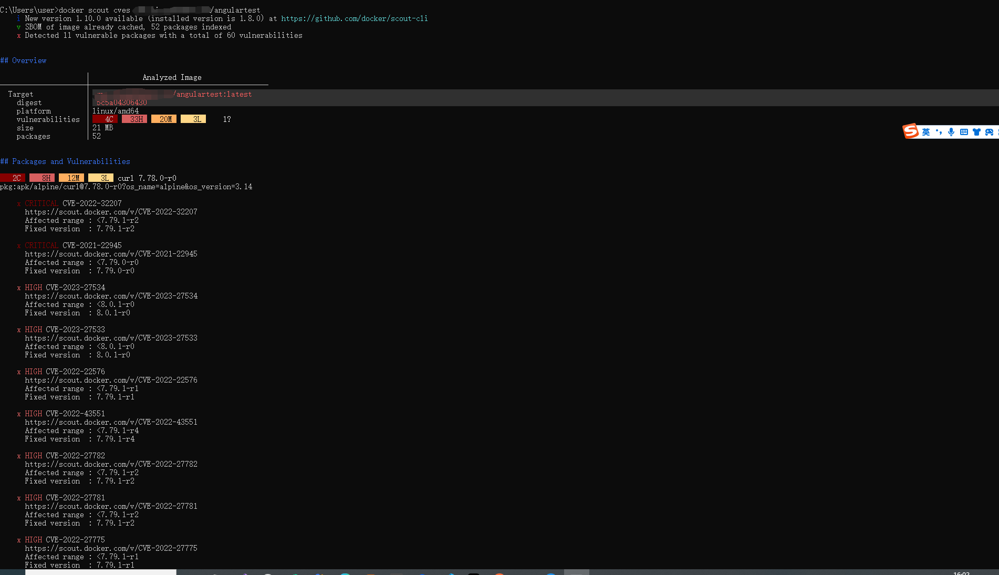

随笔写的，docker进阶教程
现在docker desktop 越来越强大，功能越来越多，用它来学习docker是不二之选
选择一个运行的容器，如图

logs
可以查看容器的运行日志
inspect
可以查看容器的所有配置参数，环境变量等
bind mounts
查看绑定的volume或者Mounts
exec
可以进入容器内部执行linux命令
files
查看容器内部的文件，其实容器就是一台小型虚拟机，部署的文件被放在app文件夹下

stats
查看docker容器当前状态
docker scout
这是一个Docker大概20.x（不记得是哪个）版本后新出的指令，可以检查你的镜像,并给出修改建议

这次有点奇怪,docker desktop上出不了结果，算了，就用命令行把
docker scout cves <image_name>
